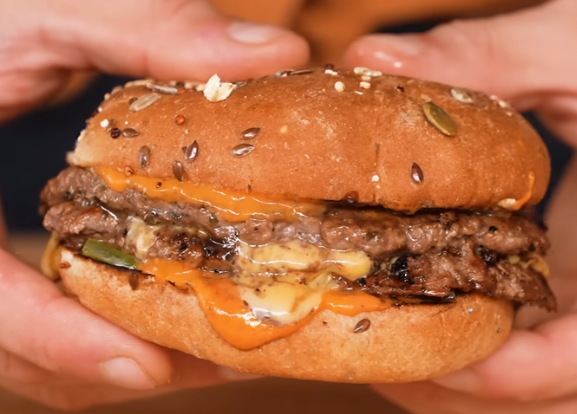

Diet Smashburger


Description
A healthy 450 calorie smashburger with 15g of fat, 45g of protein, and 33g of carbs. An essential for anyone looking to go on a diet while still eating well.
Single serving
- 1 bun
- 6 oz (170g) beef, divided in 2x 3 oz (85g) patties
- 1 slice American cheese
- 2 teaspoons (10g) sauce
- 2 slices pickle
Ingredients
- Sauce:
- 1 tablespoon (15g) light mayo
- 1 tablespoon (15g) yellow mustard
- 2 tablespoons (30g) Sriracha
- Salt and pepper to taste
- Burger:
- 1.5 lbs (680g) 96% lean ground beef, divided into 6x 3 oz (85g) patties
- 3 slices American cheese
- Salt and pepper to taste (or a seasoning of your choice)
- 3 Dave's Killer 21 Whole Grain Burger Buns
- 2 large dill pickles, thinly sliced lengthwise
Steps
- Sauce:
- In a small mixing bowl, whisk together the light mayo, yellow mustard, and Sriracha. Season to taste with salt and pepper.
- Burger:
- On a nonstick griddle set over high heat, smash down your two burger patties using a piece of parchment between the burger and spatula to avoid sticking. Immediately season with salt and pepper to taste or another seasoning of your choice.
- After 2 minutes, flip the patties, season with salt and pepper to taste, and place a slice of American cheese on one patty. Work quickly as the low fat content of the beef may lead to dryness if overcooked.
- Lightly toast the buns on the same griddle without the addition of extra fat. Alternatively you can use a toaster for a better toast.
- As soon as the cheese is melted, place the other patty on top of the cheesed patty, cut the heat and prepare to assemble.
- Assembly:
- Spread 1 teaspoon of sauce on each side of the toasted bun.
- Lay your pickles on the bottom bun followed by your burger patties and the top half of the bun. Serve and enjoy.